01 / CLEAN
Clean mentor
1:06 · Voice only
A friendly, direct introduction with restrained graphics and room for the explanation to breathe.
Meet Hayden Stegall, a PhD researcher at Rice University working on protein design. Explore three introductions to a student project: designing a protein from scratch and learning how bacteria can produce it.

A friendly, direct introduction with restrained graphics and room for the explanation to breathe.
A visual introduction to AI and biotech, with a rotating protein model and a clear design → DNA → bacteria project roadmap.
An opening hook, closer framing, larger captions, and faster cuts. A quick introduction to the mentor and the project.